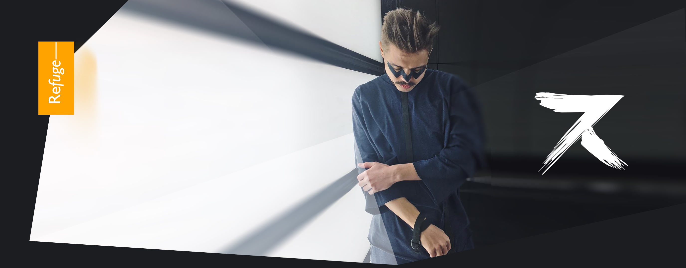
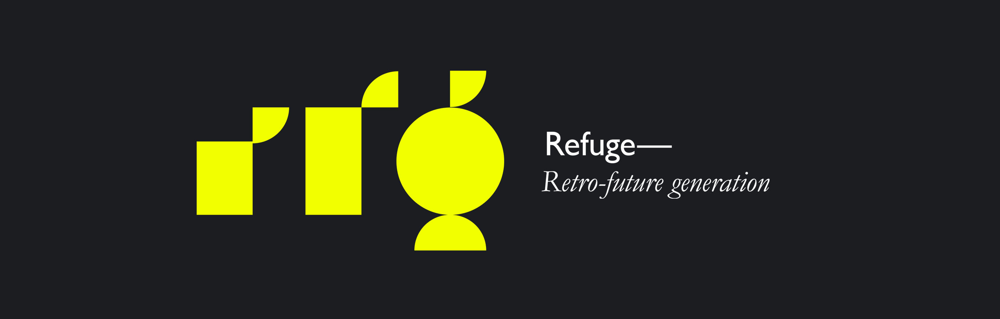
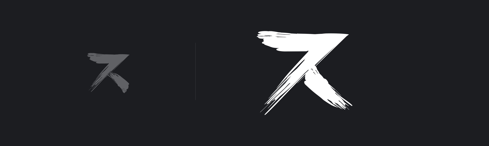
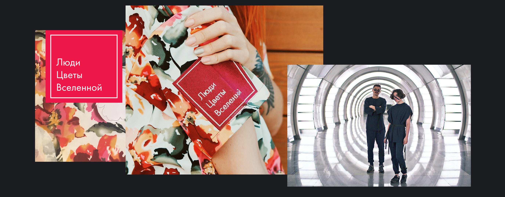
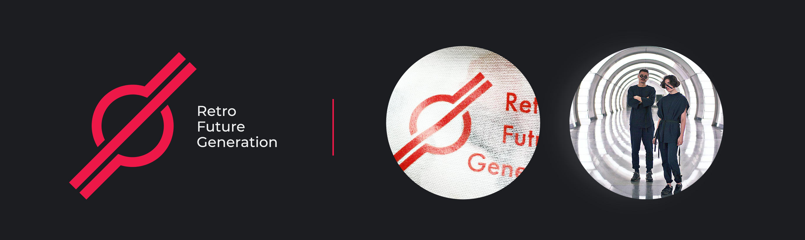

RFG stands for Retro Future Generation. It’s a bold mix of fashion and casual styles.
So we started with a sign.



Two signs were not enough for us. The first two identified the collections, but this one was chosen as the main logo of the RFG brand.
